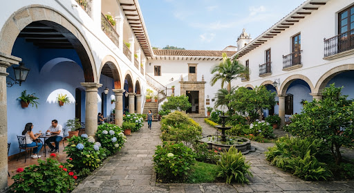

⏳ Pendiente de Aprobación
Radicado: CUL-2024-118 • 24 Oct 2024, 09:30 AM
Encuentro Departamental de Danzas Populares
Proponente: Corporación Folclórica y Cultural de Popayán • Categoría: Danza & Expresión Corporal
📍 Claustro de Santo Domingo 📅 15 Noviembre 2024 - 17:00 🎟 Entrada Gratuita
👥 Aforo estimado: 250 personas